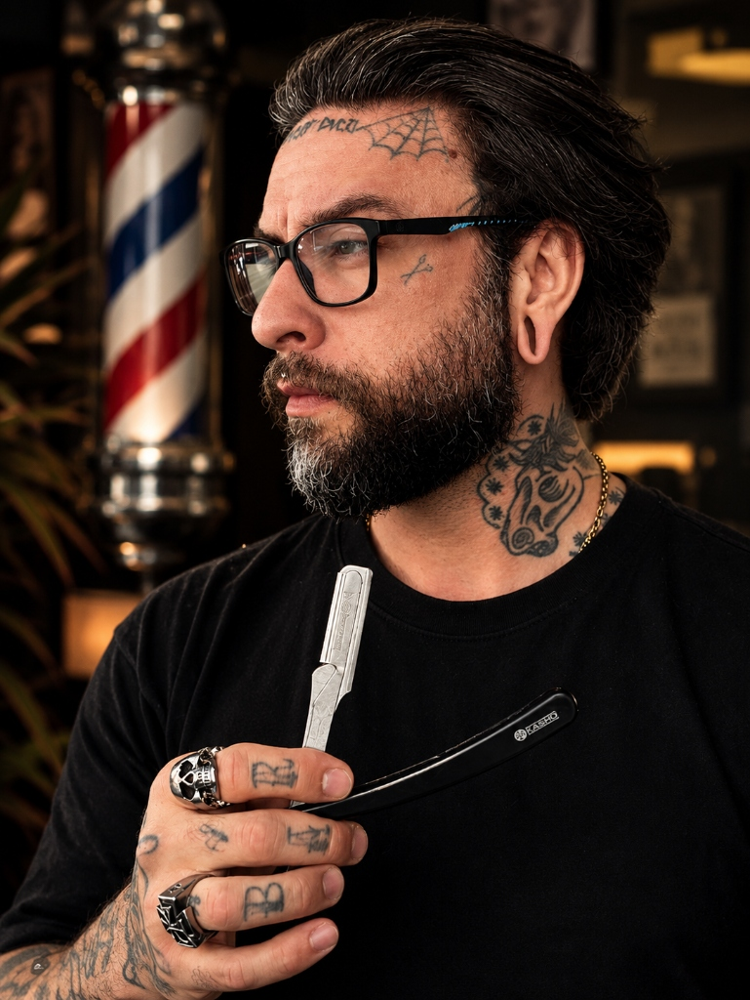

Insegurança no uso da tesoura
Dúvidas na hora de definir mechas, ângulos e divisões do topo, gerando medo de tirar comprimento além da conta.
Domine a técnica na tesoura e na máquina, ganhe mais precisão e agilidade e desenvolva a postura de atendimento que constrói respeito, fideliza clientes e eleva o seu valor na barbearia.

Muitas vezes a exaustão não vem apenas das horas em pé, mas da sensação incômoda de que você se esforça muito e ainda enfrenta barreiras na execução e no reconhecimento:
Dúvidas na hora de definir mechas, ângulos e divisões do topo, gerando medo de tirar comprimento além da conta.
Dificuldade para tirar marcas sutis entre pentes, gerando retrabalho constante e demora excessiva em cada cliente.
Ficar em silêncio ou apenas perguntar "como vai cortar?", agindo puramente como executor em vez de orientar o cliente como profissional.
Sentir que o cliente corta com você hoje, mas na próxima semana senta na cadeira de qualquer outro sem hesitar.
Saber cortar bem é a sua obrigação básica como barbeiro. Mas o que faz um profissional ser disputado por clientes e respeitado na barbearia é dominar o ciclo completo: técnica, avaliação, atendimento e posicionamento.
Domínio real do uso da tesoura, máquina, transições de degradê limpas, texturização e finalização prática. Sem enrolação acadêmica, direto ao que funciona no ritmo real da bancada.
Aprenda a observar formato de rosto, redemoinhos, estrutura craniana e perfil do cliente antes de passar a lâmina. Você deixa de ser um mero cumpridor de ordens e passa a orientar com autoridade.
A forma como você recebe o cliente, conduz a conversa na cadeira, organiza a bancada e cria uma experiência agradável que constrói segurança imediata e fidelização espontânea.
Como se comportar dentro da barbearia, construir respeito com a equipe e proprietários e demonstrar uma postura que pode contribuir para elevar seu valor percebido no mercado.
Conteúdo em vídeo gravado em alta definição, dividido em 11 aulas práticas para você assistir no computador, tablet ou celular, no seu próprio ritmo.
A base essencial para cortar com confiança, reduzindo o medo de errar e estabelecendo uma rotina de corte estruturada e ágil.
O refinamento visual que separa um corte comum de um trabalho de alto padrão com acabamento limpo, duradouro e valorizado.
A formação do profissional por trás da tesoura: comunicação assertiva, conduta na barbearia e retenção contínua de clientes.
Ao concluir os 3 módulos e as 11 aulas práticas, você terá acesso imediato ao seu Certificado Oficial Barbeiro de Sucesso para baixar em alta resolução. Perfeito para imprimir, emoldurar e expor com destaque na sua bancada.
Certificamos com distinção que
Seu Nome Aqui
concluiu com êxito o treinamento prático BARBEIRO DE SUCESSO, ministrado por Lello Barber, com carga horária de 3 horas abrangendo técnicas de corte com tesoura, máquina, degradê, atendimento e posicionamento profissional.
Queremos que você tome uma decisão consciente de que este treinamento faz sentido para o seu momento de carreira.
A diferença entre continuar na rotina do piloto automático ou assumir o controle técnico e profissional da sua carreira.
*Os resultados práticos dependem do estudo, treino constante e dedicação individual de cada aluno na aplicação do método em seu mercado e clientela.
Com mais de 15 anos atuando diariamente no atendimento em barbearia, o Lello conhece na pele todos os desafios que o barbeiro enfrenta: desde o início sem clientela até a construção de uma carreira consolidada e respeitada.
Ele não criou este curso com base em teorias acadêmicas ou truques de internet, mas sim na prática de quem atende pessoas, corta cabelos reais todos os dias e entende exatamente o que faz a diferença na cadeira.
"Minha proposta não é te ensinar coisas mirabolantes que só funcionam em vídeo editado. Eu quero te entregar o que funciona no chão da barbearia — para você ter segurança na mão, orgulho da sua profissão e respeito dos seus clientes."
Transparência e autenticidade acima de tudo: valorizamos a evolução prática construída pelos nossos alunos.
Queremos que você tenha total clareza antes de fazer sua matrícula.
Sim. As aulas são gravadas com linguagem clara e visualização direta dos ângulos, da pegada da tesoura e das divisões, permitindo que quem está começando aprenda com a base correta desde o primeiro dia.
Com certeza. Além do refinamento em técnicas de tesoura, texturização e degradê rápido, o grande diferencial está nos módulos de avaliação, postura e atendimento — fundamentais para quem quer se destacar na equipe ou elevar seu valor percebido.
No YouTube há bons conteúdos, mas eles são fragmentados, sem ordem pedagógica e mostram apenas momentos isolados. No curso você tem um método estruturado passo a passo, do início ao acabamento, integrando corte com atendimento e suporte direto no WhatsApp.
Sim! O curso é 100% gravado e direto ao ponto: são aproximadamente 3 horas de conteúdo concentrado, sem enrolação. Você pode assistir no intervalo do almoço, após o expediente ou no seu dia de folga, pelo celular ou computador.
Esse é exatamente um dos focos centrais do treinamento. O Lello descomplica o uso da tesoura (ângulos, linhas e mechas) e ensina uma lógica de transição de degradê para você parar de perder tempo apagando marcas difíceis.
Nenhum profissional sério pode garantir ganhos financeiros automáticos, pois isso depende da sua dedicação, prática, cidade e clientela. O que entregamos são as ferramentas técnicas e de postura para você prestar um serviço de alto nível e se posicionar para ser mais valorizado.
Acesso completo ao método prático de barbearia com risco zero e garantia incondicional.
Acesso completo ao treinamento prático com Lello Barber
Matricule-se no curso, assista às aulas e aplique as técnicas na sua rotina. Se dentro de 7 dias você entender que o conteúdo não é para você, basta solicitar o reembolso na própria plataforma Hotmart para receber 100% do seu investimento de volta. Sem burocracia e sem constrangimento.
Sem complicação: veja exatamente o que acontece após você garantir sua vaga.
Você será direcionado para a página oficial da Hotmart, a maior plataforma de cursos online do país, com criptografia de ponta a ponta e total sigilo de dados.
Pague à vista no Pix com aprovação imediata, boleto bancário ou parcele em até 12x no cartão de crédito em um ambiente 100% protegido.
Assim que confirmado, você recebe instantaneamente no seu e-mail o login para assistir às aulas e as orientações para tirar dúvidas no WhatsApp.
Confira as respostas diretas para as principais dúvidas sobre o curso.
O curso é voltado para homens e mulheres (aproximadamente entre 18 e 45 anos) que estão começando na profissão ou que já trabalham como barbeiros e desejam aprimorar suas técnicas de tesoura, máquina, degradê e desenvolver uma postura profissional que constrói respeito e fideliza clientes.
Sim. O curso não exige experiência prévia avançada. As aulas foram pensadas com linguagem prática e foco visual detalhado, ensinando a postura correta e os fundamentos de corte para você começar da forma certa.
Com certeza. O curso NÃO é exclusivamente para iniciantes. Se você já trabalha na área, ele o ajudará a ganhar mais velocidade, polir a precisão na tesoura, tirar marcas de degradê com facilidade e aprender a se posicionar perante clientes e proprietários.
Sim! O curso é 100% online e as aulas são gravadas em vídeo de alta qualidade. Você pode assistir nos seus horários disponíveis, pausar, rever quantas vezes quiser pelo celular, tablet, computador ou Smart TV.
O treinamento é composto por 3 módulos com 11 vídeos práticos, totalizando aproximadamente 3 horas de conteúdo direto e aplicável, sem enrolação.
Assim que o pagamento for confirmado pela Hotmart, você receberá instantaneamente um e-mail com as instruções de login e acesso à plataforma de aulas.
Sim! Ao concluir as aulas do curso, você terá acesso ao certificado oficial de conclusão do Barbeiro de Sucesso para imprimir e expor com orgulho no seu espaço de trabalho.
Sim, o treinamento conta com canal de suporte via WhatsApp para esclarecer dúvidas sobre o conteúdo e acompanhar a evolução dos alunos.
Sim! O degradê e os cortes com tesoura são pilares centrais do treinamento, abordando pegada, posicionamento de dedos, divisão de mechas e acabamentos limpos.
Você tem 7 dias a partir da confirmação da matrícula para testar o curso. Se não ficar satisfeito por qualquer motivo, basta solicitar o reembolso na plataforma Hotmart e você receberá 100% do seu dinheiro de volta.
Você pode pagar via Pix à vista com aprovação instantânea, Boleto Bancário ou parcelar em até 12x no cartão de crédito através do checkout seguro da Hotmart.
O mercado está repleto de pessoas que apenas passam máquina no piloto automático. Quem domina a tesoura com precisão e atende com postura constrói respeito, clientela fiel e valoriza o próprio trabalho.
GARANTIR MINHA VAGA NO CURSOPor apenas 12x de R$ 44,05 ou R$ 425,90 à vista • 7 Dias de Garantia • Certificado Incluso